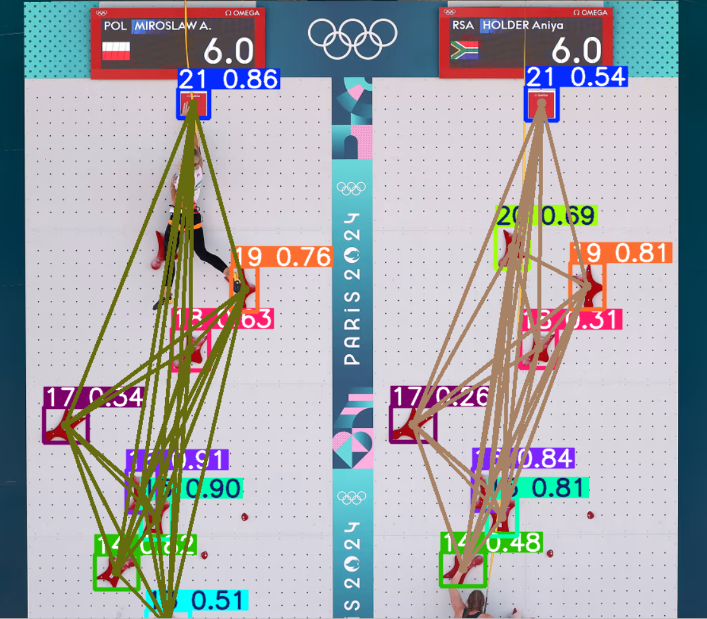
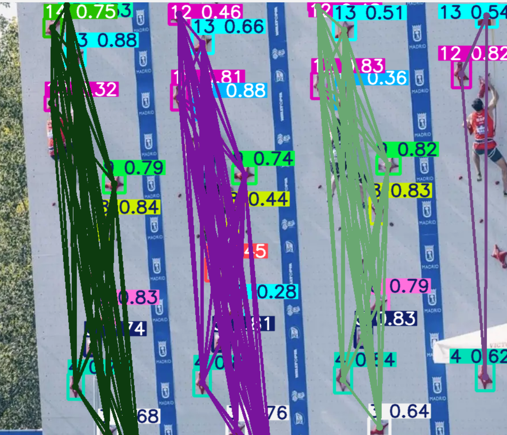
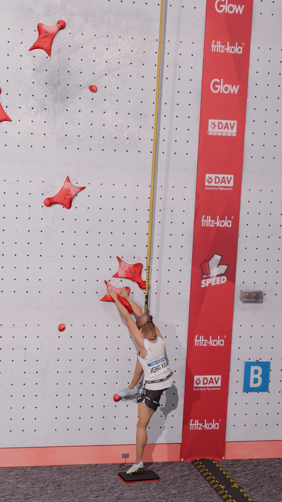
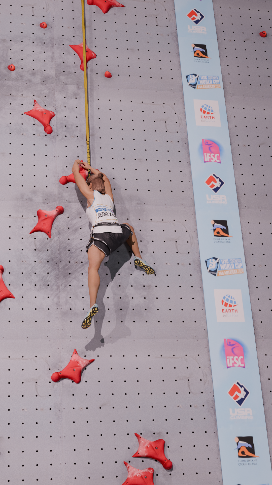
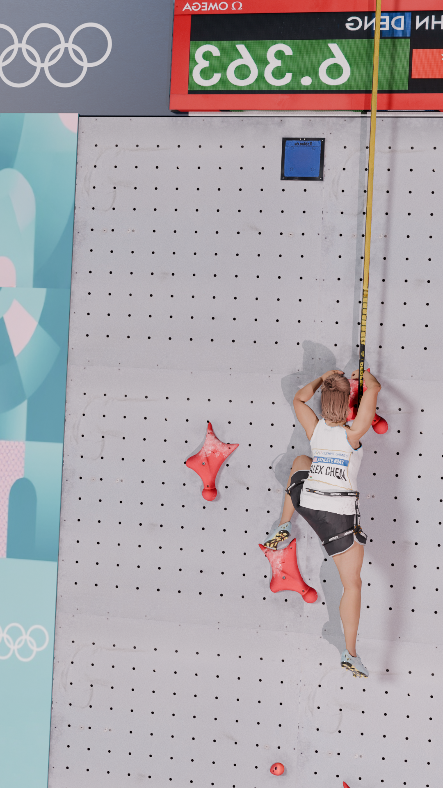

Tracking a speed climber from one raw video
A speed climbing run is over in a few seconds, and the final time is the only number most viewers see. A coach wants more: how fast the athlete moves at each section of the wall, where the speed drops, and how two climbers compare move by move. Outside controlled settings, the footage that exists is usually a single video. It can be a broadcast clip or a phone recording from the stands, with no calibration, no markers, and a camera that pans and zooms to follow the athlete.
In this article we explore how we can turn that one video into height and vertical velocity, in metres and metres per second. The idea that makes this possible is short: the wall is the calibration target. Competition walls follow the IFSC standard, so the position of every hold is fixed by rule before the video starts. If we can find the holds in a frame, we know how pixels relate to metres in that frame.

Pixels do not keep the same size
A pose estimator can tell us where the climber's hips and hands are, but only in pixels. To report a height in metres, we need a map from image coordinates to wall coordinates. With a fixed, calibrated camera we would compute that map once. Broadcast footage breaks this assumption: the camera tilts upwards with the athlete, the zoom changes, and the lower holds leave the frame as the climber rises, which means the mapping changes at every frame.
So every frame must carry its own ruler. The pipeline in the repository follows from that requirement:
- we detect the holds and identify which hold each one is;
- we look up where that hold sits on the standard IFSC wall;
- use those pairs to map the climber's body landmarks onto the wall
- smooth and filter the resulting trajectory and differentiate it to get velocity.
Step 2 is the easiest step, and it is where the project starts.
A wall written as text
The IFSC wall is built from 1.5 m × 1.5 m panels drilled with a regular grid of holes, and the regulations describe each hold by the hole that carries it [12]. In our repository we keep that description almost verbatim, as a small text format that a regular expression turns into coordinates. Each line declares one hold:
_GRIP_LOC = """
1] @F2-SN2#1
2] @G2-SN2#3
3] @A2-SN2#9
4] @G1-SN3#4
5] @M1-SN3#10
...
20] @M1-SN9#10
"""Read 5] @M1-SN3#10 from left to right: hold number 5 sits in hole column M, in the first 1.5 m half of the lane (1), on panel 3 counted from the bottom (SN3), in hole row 10 of that panel (#10).
The parser treats SN as a fixed token and captures the four fields around it:
_GRIP_DECL = re.compile(
r"(?P<id>\d+)]\s+@(?P<relx>[A-Z][1-2])-SN(?P<sn>\d+)#(?P<rely>\d+)"
)
GRIP_VALUES_LIST = [
grip_to_wall_coordinates(rel_x, sec, rel_y)
for g_id, rel_x, sec, rel_y
in (grip.groups() for grip in _GRIP_DECL.finditer(_GRIP_LOC))
]The advantage of this format is that anyone can check the table against the regulation document line by line, which is much harder with a raw array of floats.
The conversion from hole address to metres is inside scripts/ground_truth.py, where we use standard sizes for speedclimbing walls:
HOLE_PITCH = 0.125
PANEL_SIZE = 1.5
VERTICAL_EDGE_OFFSET = 0.1875
WALL_BOTTOM_HEIGHT = 0.20
# Horizontal columns are: A B C D E F G H I L M (J and K do not exist)
x = (half - 1) * PANEL_SIZE + (col_idx + 1) * HOLE_PITCH
y = (
WALL_BOTTOM_HEIGHT
+ (int(panel) - 1) * PANEL_SIZE
+ VERTICAL_EDGE_OFFSET
+ (int(row) - 1) * HOLE_PITCH
)Two details in this function matter. The hole columns skip the letters J and K, so the column index comes from a lookup table instead of the character code. And the wall starts 0.20 m above the ground, which shifts every height. This is because IFSC prescribes that the standard wall must lay on a 20cm panel on the floor.
Finding the ruler in each frame
With the wall described, the next task is to find its holds in the video. The detector is a YOLOv8 model fine-tuned on climbing holds [2], [3]. It predicts one class per hold, so we detect not only the presence of a grip but also its class. Since there are 21 standardized grip classes, this reduces to a standard object detection task. The server runs it through the tracker interface, which keeps identities stable between frames:
res = model.track(
frame_bgr,
device=DEVICE,
half=USE_GPU, # FP16 only on GPU
persist=True, # keep track IDs between frames
iou=0.40,
conf=0.25,
verbose=False,
agnostic_nms=False
)Two filters clean the detections before any geometry happens. Holds cut by the frame border have a wrong centroid, so any box within 3% of the edge is discarded. Then each class keeps only its most confident detection, because one hold can only be in one place:
def suppress_border_detection(boxes, border_ratio, image_dim):
h, w = image_dim
xmin, ymin, xmax, ymax = boxes.T
margin_x, margin_y = border_ratio*w, border_ratio*h
return (xmin > margin_x) & (ymin > margin_y) & (xmax < w-margin_x) & (ymax < h-margin_y)
# One detection per grip class: keep the most confident one
for c in np.unique(cls_np):
class_mask = cls_np == c
dup_keep_mask[np.argmax(confs * class_mask)] = TrueThe second filter is correct for a single lane. On a two-lane broadcast frame, such as the one at the top of this post, every hold class appears twice, and the filter keeps only one copy. We will come back to this when we look at multiple lanes.
From pixels to wall coordinates
A climbing wall is a plane, and the map between a plane and its image is a homography: a 3 × 3 projective transform with eight degrees of freedom [4]. Four point pairs, no three of them collinear, determine it. This is why a planar target does not need a full camera pose.
The number of visible holds changes with every frame, so var_n_pnp_solve picks a model based on how many holds it has:
if n >= 4:
H_inverse, _ = cv2.findHomography(i_dst, i_src, cv2.RANSAC)
if H_inverse is None:
H_inverse, _ = cv2.findHomography(i_dst, i_src, cv2.LMEDS)
...
x_point_w = np.dot(H_inverse, np.array(h_coord + [1.0]).T)
x_point = np.array([x_point_w[0] / x_point_w[2], x_point_w[1] / x_point_w[2]])
elif n == 3:
H = cv2.getAffineTransform(i_src.astype(np.float32), i_dst.astype(np.float32))
A_inv = np.linalg.inv(H[:, :2])
x_point = np.dot(A_inv, (np.array(h_coord) - np.array(H[:, 2:].T)).T).ravel()
elif n <= 2:
# scale from the known grip size (see below)With four or more holds, OpenCV estimates the homography with RANSAC, which ignores misplaced detections by fitting on random minimal subsets and keeping the model with the most inliers [5]. If that fails, it retries with least median of squares, a robust regression that tolerates up to half the data as outliers [6].
Note the direction: findHomography(i_dst, i_src) fits the map from image to wall, so the landmark can be transformed directly.
With exactly three holds, an affine transform is fully determined, so the function inverts it. It cannot model perspective, but it still handles rotation, scale and shear.
With one or two holds, there is not enough geometry, and the code falls back to what it knows about a single hold: its size. The repository takes 0.35 m for the grip size. The side of the bounding box in pixels, divided by 0.35 m, gives a local pixels-per-metre scale. The offset from the hold to the landmark, divided by that scale, gives a position on the wall.
Following the body
The wall map is only useful once we have something to map. MediaPipe Pose, which is based on BlazePose, predicts 33 body landmarks per frame [7]. In our prototype we consider five of them, since extensions are trivial:
# Center, Left/Right Wrist, Left/Right Ankle
chosen_landmarks = [-1, 15, 16, 27, 28]
with mp_pose.Pose(min_detection_confidence=0.5, min_tracking_confidence=0.5,
static_image_mode=False, smooth_landmarks=True,
model_complexity=0) as pose:The value -1 is not a MediaPipe landmark. It stands for an approximate body centre, the mean of both hips and both shoulders:
x = (lm_lm[mp_pose.PoseLandmark.LEFT_HIP].x + lm_lm[mp_pose.PoseLandmark.RIGHT_HIP].x +
lm_lm[mp_pose.PoseLandmark.LEFT_SHOULDER].x + lm_lm[mp_pose.PoseLandmark.RIGHT_SHOULDER].x) / 4The trunk moves more steadily than the limbs, so the centre is the natural signal for speed. The wrists and ankles show where the climber reaches and pushes.
The server uses the lite pose model (model_complexity=0), which trades some landmark accuracy for speed. When no pose is found in a frame, each landmark holds its last value.
From jittery positions to velocity
At this point each landmark has one wall position per frame, and that sequence is noisy. Detections flicker in and out, box sizes vary by a few pixels, and the scale estimate jumps when a hold enters or leaves the frame. Velocity is the derivative of position, and differentiation amplifies exactly this kind of frame-to-frame noise. The smoothing step decides whether the velocity curve is usable.
The first stage is a Kalman filter [8] with a constant-acceleration motion model. The state holds position, velocity and acceleration on both axes, and only position is observed:
# State: [x, y, vx, vy, ax, ay]
F = np.array([
[1, 0, dt, 0, 0.5 * dt * dt, 0],
[0, 1, 0, dt, 0, 0.5 * dt * dt],
[0, 0, 1, 0, dt, 0],
[0, 0, 0, 1, 0, dt],
[0, 0, 0, 0, 1, 0],
[0, 0, 0, 0, 0, 1]
])
kf_pos = KalmanFilter(transition_matrices=F,
observation_matrices=[[1, 0, 0, 0, 0, 0], [0, 1, 0, 0, 0, 0]])
# Learn the noise model once, on the body centre, then reuse it
kf_trained = kf_pos.em([m for m in first_measurements if not np.isnan(m[0])], n_iter=30)
smoothed_state_means, _ = kf_trained.smooth(measurements)
yf = butter_lowpass_filter(ys, cutoff=1, fs=fs, order=2)
vel = [val[3] for val in smoothed_state_means] # vy
velf = butter_lowpass_filter(vel, cutoff=1, fs=fs, order=3)Three choices in this block are worth explaining. First, the noise covariances are not tuned by hand. The em call estimates them from the data with the expectation–maximisation method for state-space models [9]. It runs once, on the body centre, and the other landmarks reuse the result.
Second, smooth is not the frame-by-frame filter. It is the Rauch–Tung–Striebel smoother [10], which uses future frames as well as past ones. That is allowed here because the whole video is available before analysis starts.
Third, the velocity comes from the fourth state variable, vy, so the filter differentiates for us instead of a finite difference on noisy positions.
The second stage is a Butterworth low-pass filter with a 1 Hz cutoff: order 2 on the height and order 3 on the velocity. Note that the height curve is filtered from the raw heights, not from the Kalman output.
lfilter is a causal filter, and a causal low-pass delays its output. For a 1 Hz cutoff, the low-frequency delay is about 0.23 s for order 2 and about 0.32 s for order 3, and it does not depend on the frame rate. In a run of a few seconds, that delay is a noticeable part of the climb.
Winter recommends a second pass in reverse for biomechanical data, which cancels the phase lag [11]. Because the video is offline, that pass is free:
from scipy.signal import butter, filtfilt
b, a = butter(order, cutoff, fs=fs, btype="low")
yf = filtfilt(b, a, ys) # forward and backward: no phase lagThe same reference also describes residual analysis to choose the cutoff from the data. A 1 Hz cutoff is a strong choice for limb landmarks, and residual analysis would show whether it removes real movement.
More than one lane
Competition runs are head-to-head, and many clips show two lanes side by side. We saw earlier that the one-detection-per-class filter keeps only one copy of each hold. With two lanes, it can pair hold 7 from the left lane with hold 8 from the right lane, and the geometry breaks.
The experimental script experimental/dbscan.py separates lanes before any mapping. It uses DBSCAN [1], a density-based clustering method that does not need the number of clusters in advance and marks isolated points as noise.
Its one distance parameter, eps, is derived from the wall itself. The script takes the largest distance between consecutive holds in the table (1.55 m in the corrected table), converts it to pixels with the observed hold size, and adds a 10% margin:
# Largest gap between consecutive grips, in metres
max_dist = max(np.linalg.norm(np.array(GRIP_VALUES_LIST[i+1]) - np.array(GRIP_VALUES_LIST[i]))
for i in range(20))
# s = mean observed grip box side, in pixels; GRIP_SIZE = 0.35 m
eps = max_dist * (s / GRIP_SIZE) * 1.10
labels = calculate_dbscan_2d(dst, eps=eps, min_pts=2)
# Join clusters whose centroids are less than half a lane apart horizontally
eps_x = (s / GRIP_SIZE) * 1.50
merged = merge_lists_pairwise(
labels, lambda i1, i2: abs(centroids[i1][0] - centroids[i2][0]) < eps_x
)DBSCAN on its own can split one lane into several clusters, because the route has large gaps between some holds. The second step merges clusters whose centroids are less than 1.5 m apart horizontally, half the 3 m width of a lane, and it uses a union–find structure to join them transitively. Lanes are physically separated, so the rule does not depend on how many lanes the frame shows.

Checking the numbers against a known answer
A velocity curve from real footage is hard to verify, because nobody measured the true trajectory. The repository solves this with synthetic data: a Blender model of the IFSC wall, an animated climber, and cameras that move like broadcast cameras. A rendered climb comes with the exact position of every body joint in every frame.



scripts/validation.py runs the full extraction on such a render, loads the ground-truth joints from JSON, builds the same hip-and-shoulder centre, and removes the mean from both signals before comparing them. Removing the mean makes the test about the shape of the motion, not about the absolute offset.
Running it on a clip
The analysis runs behind a small web service. FastAPI accepts one or two uploaded videos and queues a Celery task, Redis carries the queue and the task state, and the browser polls /api/analysis-status/{job_id} until the result is ready:
redis-server --daemonize yes
celery -A server.tasks worker -l info -P solo
uvicorn server.main:app --reload
# then open http://127.0.0.1:8000/viewerThe task returns one entry per landmark, keyed by the landmark index, with the filtered height and vertical velocity series. The viewer draws them with Chart.js and overlays two climbers when two videos are uploaded:
{
"climber_A": {
"landmarks": {
"-1": { "pos": [...], "vel": [...] },
"15": { "pos": [...], "vel": [...] },
...
},
"dt": 1 / fps,
"confidences": [...]
},
"status": "completed"
}The wall is all you need
Nothing in this pipeline calibrates the camera: the measurement comes from the specifics of the sport itself. Since every competition wall is built to the same drawing, every frame of every video contains a ruler with known marks. The detector reads the marks, the table says what they mean, and the filters turn a noisy sequence of positions into a velocity curve.
References
- Ester, Martin; Kriegel, Hans-Peter; Sander, Jörg; Xu, Xiaowei (1996). “A Density-Based Algorithm for Discovering Clusters in Large Spatial Databases with Noise.” KDD-96.
- Redmon, Joseph; Divvala, Santosh; Girshick, Ross; Farhadi, Ali (2016). “You Only Look Once: Unified, Real-Time Object Detection.” CVPR 2016.
- Jocher, Glenn; Chaurasia, Ayush; Qiu, Jing (2023). Ultralytics YOLOv8 (software).
- Hartley, Richard; Zisserman, Andrew (2004). Multiple View Geometry in Computer Vision, 2nd ed. Cambridge University Press.
- Fischler, Martin A.; Bolles, Robert C. (1981). “Random Sample Consensus: A Paradigm for Model Fitting with Applications to Image Analysis and Automated Cartography.” Communications of the ACM.
- Rousseeuw, Peter J. (1984). “Least Median of Squares Regression.” Journal of the American Statistical Association.
- Bazarevsky, Valentin; Grishchenko, Ivan; Raveendran, Karthik; Zhu, Tyler; Zhang, Fan; Grundmann, Matthias (2020). “BlazePose: On-device Real-time Body Pose Tracking.” CVPR 2020 Workshop on Computer Vision for Augmented and Virtual Reality.
- Kalman, Rudolf E. (1960). “A New Approach to Linear Filtering and Prediction Problems.” Journal of Basic Engineering.
- Shumway, Robert H.; Stoffer, David S. (1982). “An Approach to Time Series Smoothing and Forecasting Using the EM Algorithm.” Journal of Time Series Analysis.
- Rauch, Herbert E.; Tung, F.; Striebel, Charlotte T. (1965). “Maximum Likelihood Estimates of Linear Dynamic Systems.” AIAA Journal.
- Winter, David A. (2009). Biomechanics and Motor Control of Human Movement, 4th ed. Wiley.
- IFSC speed wall specification (the document referenced in the repository source code).